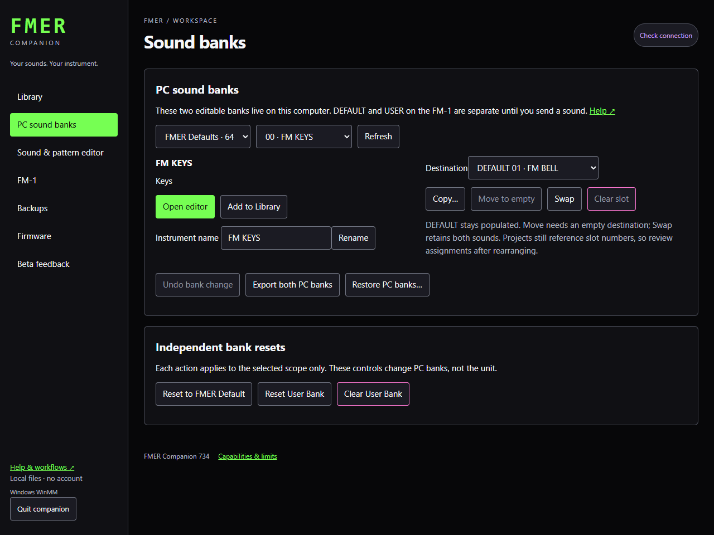
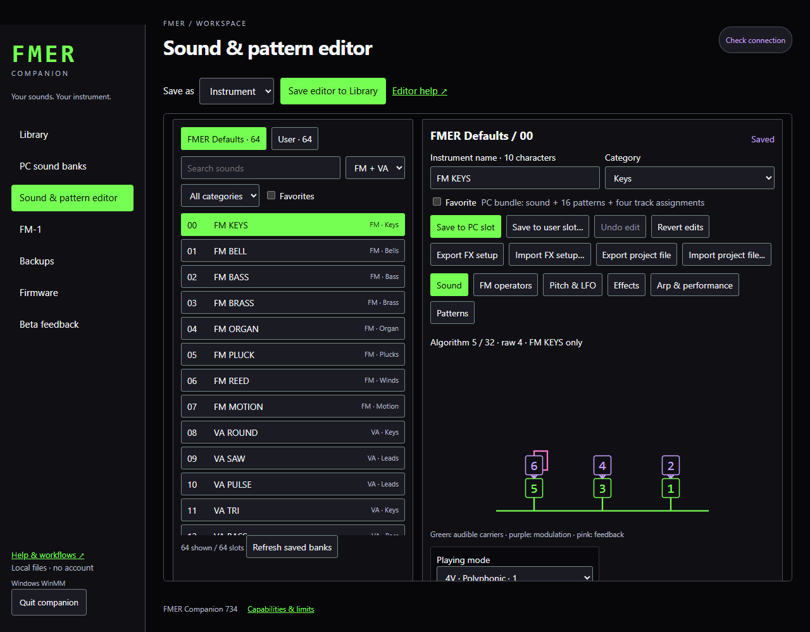

Start here
Your first companion session
Working sound, computer library and unit storage are three separate places.
- Extract the entire Windows ZIP, then double-click FMER Companion.exe. Keep the extracted folder together. Python, the sound renderer, help and defaults are included. Your default browser opens a local 127.0.0.1 address; no internet connection, account or hosted website is needed.
- Open Sound banks. DEFAULT contains 32 FM and 32 VA instruments. USER starts with independent copies; either bank can contain either engine.
- Choose a sound and open Editor. Move a slider or choose a musical setting. Exact stored numbers remain visible. Audition renders audio on the computer.
- Save an instrument into Library. Give it a descriptive title, collection and tags. This does not write to the unit.
- When ready to transfer, connect the unit, read its bank, select a destination and explicitly send the library item. Read the overwrite summary.
- Make a unit backup before reorganizing hardware slots. Save a project on the unit when you want its patterns and track assignments available after power-off.
The Editor's working sound can differ from both its PC bank destination and the connected unit. Saving in one place does not silently synchronize the other two. Library titles can be longer than the ten-character instrument names shown by the unit.
On firmware734, GLO first page K1 and SEQ / PLAY MODE K1 choose1V (one synth voice),4V (four voices for one synth) or4T (four mono tracks). On the PRESETS page the SELECT knob also changes playing mode; the PRESETS knob always browses sounds. Voices is locked in4T. The header keeps the current mode visible. Entering or leaving4T releases notes and stops playback. Changing between1V and4V keeps single-instrument sequencing running; browsing sounds and ordinary pages preserve the mode.
Portable application, persistent library
Your music and operation logs live in %LOCALAPPDATA%\FMER\Companion, separate from the executable. Moving the application folder does not move your library. Use Library export and Sound banks backup to transfer music to another PC. The supplied Libraries folder contains a clean catalog of all 64 original defaults. Import it from Library when you want editable catalog copies; existing items are preserved.
Use Quit companion before replacing the application folder. Windows 10/11 x64 is the supported platform. An unsigned download may show a Windows reputation warning; verify the release source and checksum. No administrator installation is required.
Closing and updating
Use Quit companion for immediate shutdown. Closing the last app tab releases the local server after about 45 seconds; a reload or second tab keeps it available. Active transfers continue safely until finished, even if the tab closes. Reopen the app to monitor them. Starting a new version asks an idle older server to quit; a busy older server is left running. You should not need Task Manager.

